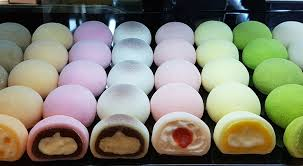

Mochi

Description
Mochi is a traditional Japanese rice cake made from glutinous rice (mochigome) that is pounded into a paste and molded into shape.
Mochi has a chewy texture and can be enjoyed in various forms, including plain, sweet, or savory. It is often filled with ingredients
like sweet red bean paste, ice cream, or fruit. Mochi is a versatile treat that is enjoyed year-round, especially during Japanese New Year
celebrations and other special occasions.
Ingredients
- Glutinous Rice Flour (Mochiko)
- Water
- Sugar
- Sweet Fillings (e.g., red bean paste, ice cream, fruit)
- Potato Starch (for dusting)
Steps
-
Mix Ingredients: Combine glutinous rice flour, water, and sugar in a bowl, stirring until smooth.
-
Cook Mixture: Steam the mixture for about 20 minutes until it becomes a sticky, pliable dough.
-
Shape Mochi: Dust your hands and surface with potato starch. Take small portions of the dough, flatten, and fill with desired sweet fillings. Pinch to seal and shape into balls.
-
Serve: Serve the mochi immediately or store in an airtight container to keep them soft and chewy.
Back to Home